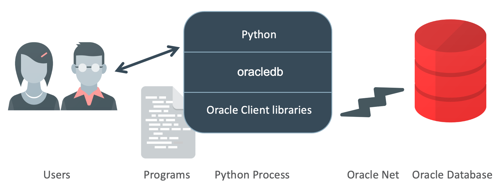

Index
Operações CRUD com Python em um Banco de Dados Oracle¶
Nesta aula vamos realizar o processo de conexão a um banco de dados utilizando Python. Trata-se de um guia rápido de consulta para operações CRUD (Create, Read, Update, Delete) com uma abordagem mais simples e direta.

Warning
Apenas por compatibilidade com o que é estudado no curso, vamos utilizar o banco de dados ORACLE, e no python a biblioteca oracledb, mas você ainda encontra bastante código legado com a biblioteca cx_Oracle.
É possível realizar a conexão de qualquer banco de dados com o Python, incluindo MySQL, SQLite, MongoDB, Oracle, e PostgreSQL. De forma geral, os mesmos passos básicos são seguidos para estabelecer uma conexão e executar operações CRUD (Create, Read, Update, Delete). No entanto, é fundamental acessar a documentação oficial de cada banco de dados e da biblioteca Python específica para entender as particularidades e o que é necessário adaptar.
Aqui estão algumas considerações importantes para cada um dos principais sistemas de gerenciamento de banco de dados (SGBDs):
-
MySQL: Para interagir com MySQL usando Python, a biblioteca mais comum é omysql-connector-python. Após a instalação via pip, a conexão pode ser estabelecida fornecendo os detalhes do host, usuário, senha e o banco de dados. É importante verificar questões de segurança e desempenho, como o uso de conexões pool.- ACESSE A DOCUMETAÇÃO OFICIAL EM: https://www.mysql.com/
-
SQLite: SQLite é uma biblioteca que fornece um banco de dados SQL acessível sem a necessidade de um processo de servidor separado. Python vem com suporte embutido para SQLite através do módulosqlite3. Isso facilita a execução de operações de banco de dados sem configuração adicional e é ideal para desenvolvimento e testes.- ACESSE A DOCUMETAÇÃO OFICIAL EM: https://www.sqlite.org/
-
MongoDB: MongoDB é umbanco de dados NoSQLque armazena dados em documentos semelhantes aJSON. Para usá-lo com Python, você deve instalarpymongo. A conexão com MongoDB difere significativamente em comparação com os bancos de dados relacionais, focando mais na manipulação de documentos e coleções em vez de tabelas e linhas.- ACESSE A DOCUMETAÇÃO OFICIAL EM: https://www.mongodb.com/
-
OracledbO oracleb, é uma biblioteca poderosa que permite a conexão entre Python e bancos de dados Oracle. É essencial configurar os parametros de usuário, senha e DNS para uma conexão bem-sucedida.- ACESSE A DOCUMETAÇÃO OFICIAL EM: https://oracle.github.io/python-oracledb/
-
PostgreSQL: Para conectar-se ao PostgreSQL, opsycopg2é uma escolha popular. Esta biblioteca é eficaz tanto para operações simples quanto para uso em produção, oferecendo suporte robusto para diferentes tipos de dados e conformidade com os padrões SQL.- ACESSE A DOCUMETAÇÃO OFICIAL EM: https://www.postgresql.org/
-
Microsoft SQL Server: Trata-se tambem de um dos maiores bancos de dados mantido pela microsoft. Há vários drivers SQL do Python disponíveis. No entanto, a Microsoft coloca esforços de teste e confiança no driverpyodbcoutro conhecido é opymssql.- ACESSE A DOCUMETAÇÃO OFICIAL EM: https://mkleehammer.github.io/pyodbc/
Progress
continuar...
Pré-requisitos¶
- oracledb: Biblioteca Python para conectar ao Oracle. Instale via pip:
pip install oracledb
Importando a biblioteca¶
Comece seu script Python importando a oracledb:
import oracledb
Configurando a String de Conexão¶
Crie uma Data Source Name (DSN) utilizando as credenciais e o endereço do seu banco de dados Oracle:
dsn = oracledb.makedsn('hostname', port, service_name='service_name')
connection = oracledb.connect(user='username', password='password', dsn=dsn, encoding="UTF-8")
Tip
Você já possui essas credenciais de acesso. abra o seu oracle developer e adicione as informações é esperado alguma coisa do tipo:
# Conecta o servidor
dsnStr = oracledb.makedsn("oracle.fiap.com.br", 1521, "ORCL")
# Efetua a conexão com o Usuário
connection = oracledb.connect(user=USER, password=PASS, dsn=dsnStr)
Warning
Cuidado!!!! para não vazar seus acessos e senhas na internet. NUNCA DE COMMIT dessas informações. Crie um aruqivo separado com essas informações ou utilize variaveis de ambiente. Como fazer? Leia este tutorial: protegendo credenciais de banco de dados em aplicacoes python
Se tudo der certo, parabéns! você já está conectado ao seu banco de dados. Agora podemos seguir com as operações de CRUD.
Schema¶
No seu Oracle Developer, crie o seguinte tabela:
table: petshop
schema:
id -- PK number
tipo_pet -- varchar 30
nome_pet -- varchar 30
idade -- number
Vamos utilizar essa tabela como base do nosso exemplo.
Uso simples (apenas para entender a ideia principal)¶
Depois de estabelecer uma conexão com o banco de dados, você pode executar instruções SQL usando o objeto cursor.
O objeto cursor permite executar instruções SQL e recuperar os resultados. Você pode criar um objeto cursor usando o seguinte código:
# Cria um cursor
cursor = connection.cursor()
Para executar uma instrução SQL, você pode usar o método execute() do objeto cursor. Por exemplo, para executar uma instrução SELECT, você pode usar o seguinte código:
# Executa uma instrução SELECT
cursor.execute('SELECT * FROM nome_tabela')
Você também pode usar o método execute() para executar outros tipos de instruções SQL, como INSERT, UPDATE e DELETE. Por exemplo, para inserir uma nova linha em uma tabela, você pode usar o seguinte código:
# Executa uma instrução INSERT
cursor.execute("INSERT INTO nome_tabela (coluna1, coluna2) VALORES (valor1, valor2)")
# Confirme as alterações no banco de dados
connection.commit()
Warning
É importante lembrar de chamar o método commit() após executar qualquer instrução SQL que modifique o banco de dados. Isso garante que as alterações sejam salvas no banco de dados.
Quando terminar de trabalhar com o banco de dados, você deve fechar a conexão e os objetos cursor para liberar recursos. Você pode fazer isso usando o seguinte código:
#fecha o cursor
cursor.close()
#Fecha a conexão
connextion.close()
Com esse entendimento básico, podemos avançar para criar algumas funções mais robustas.
Progress
continuar...
Boas Práticas de Acesso a Banco de Dados¶
A segurança é um dos pilares fundamentais no desenvolvimento de qualquer aplicação que interaja com bancos de dados. Um dos riscos mais comuns e perigosos em aplicações web é o ataque de SQL Injection, onde um invasor consegue executar comandos SQL maliciosos através da interface da aplicação. Para mitigar esse risco, é crucial adotar práticas robustas de segurança no acesso a banco de dados.
Vamos fazer o teste:
- https://www.codingame.com/playgrounds/154/sql-injection-demo/sql-injection
- https://www.hacksplaining.com/lessons/sql-injection
Prevenção de SQL Injection¶
SQL Injection pode comprometer a segurança dos dados e até mesmo permitir o controle total de um banco de dados. Para prevenir esses ataques, uma das técnicas mais eficazes é o uso de consultas parametrizadas.
Consulta Parametrizada¶
Consultas parametrizadas ajudam a separar o código SQL dos dados que ele manipula. Isso é feito usando placeholders (como :1, :2, :3), que são substituídos pelos valores reais no momento da execução da consulta. Esses placeholders garantem que os valores inseridos são tratados como dados e não como parte do código SQL.
Vamos explorar como implementar essa técnica em Python, usando a biblioteca oracledb, com exemplos de uma funções genérica para inserir dados de forma segura.
Operações CRUD¶
As operações de CRUD (Create, Read, Update, Delete) são fundamentais para qualquer sistema que interaja com bancos de dados, servindo como a base para a maioria das aplicações que armazenam e recuperam informações. No entanto, além dessas operações básicas, existem outras ações e conceitos importantes em gerenciamento de banco de dados (que não serão estudados neste momento) que podem ampliar a eficiência e funcionalidade das suas aplicações, tais como: Procedimentos Armazenados (Stored Procedures), Gatilhos (Triggers), Transações, Backup e Recuperação e muitos outros.
Create (Inserir Dados)¶
Utilize o método cursor para interagir com o banco de dados. Aqui está como inserir um novo registro na tabela petshop:
cursor = connection.cursor()
try:
sql = "INSERT INTO petshop (tipo_pet, nome_pet, idade) VALUES (:1, :2, :3)"
cursor.execute(sql, ['Cachorro', 'Bolt', 2])
connection.commit()
except oracledb.DatabaseError as e:
error, = e.args
print(f"An error occurred: {error.code} - {error.message}")
finally:
cursor.close()
Read (Ler Dados)¶
Para ler dados, você pode executar uma consulta SQL simples. O método fetchall() é usado para recuperar todos os registros retornados:
cursor = connection.cursor()
try:
cursor.execute("SELECT * FROM petshop")
rows = cursor.fetchall()
for row in rows:
print(row)
except oracledb.DatabaseError as e:
error, = e.args
print(f"An error occurred: {error.code} - {error.message}")
finally:
cursor.close()
Update (Atualizar Dados)¶
Atualize registros especificando condições que correspondam aos registros desejados:
cursor = connection.cursor()
try:
sql = "UPDATE petshop SET nome_pet = :1 WHERE id = :2"
cursor.execute(sql, ['Loki', 1])
connection.commit()
except oracledb.DatabaseError as e:
error, = e.args
print(f"An error occurred: {error.code} - {error.message}")
finally:
cursor.close()
Delete (Deletar Dados)¶
Para deletar registros:
cursor = connection.cursor()
try:
cursor.execute("DELETE FROM petshop WHERE id = :1", [1])
connection.commit()
except oracledb.DatabaseError as e:
error, = e.args
print(f"An error occurred: {error.code} - {error.message}")
finally:
cursor.close()
Criar uma tabela (caso não exista)¶
Caso seja necessário, é possivel criar uma tabela:
cursor = connection.cursor()
try:
# Verifica se a tabela já existe e cria a tabela se não existir
cursor.execute("""
DECLARE
cnt NUMBER;
BEGIN
SELECT COUNT(*) INTO cnt FROM user_tables WHERE table_name = 'ALUNOS';
IF cnt = 0 THEN
EXECUTE IMMEDIATE 'CREATE TABLE alunos (
id NUMBER GENERATED ALWAYS AS IDENTITY PRIMARY KEY,
nome VARCHAR2(100) NOT NULL,
nota INTEGER NOT NULL
)';
END IF;
END;
""")
connection.commit()
except oracledb.DatabaseError as e:
error, = e.args
print(f"An error occurred: {error.code} - {error.message}")
finally:
cursor.close()
Encerrando a Conexão¶
Sempre encerre o cursor e a conexão para liberar recursos do banco de dados:
connection.close()
DICAS¶
Tratamento de exceções e fechar conexões¶
Ao realizar essas operações, é crucial gerenciar exceções e fechar conexões para manter a integridade e a segurança do banco de dados.
Parametrização das Consultas¶
Parametrização é uma prática importante para prevenir ataques de injeção de SQL (SQL Injection). A parametrização assegura que os comandos enviados ao banco de dados são interpretados como dados, e não como código executável. Isso não só aumenta a segurança da aplicação, evitando que agentes maliciosos executem operações indesejadas no banco de dados, como também ajuda a manter a integridade dos dados.
Além de outros beneficios como:
Melhora a Performance: Muitos SGBDs otimizam o desempenho de consultas parametrizadas ao preparar o SQL uma vez e executá-lo múltiplas vezes com diferentes parâmetros.
Aumenta a Portabilidade do Código: Consultas parametrizadas ajudam a garantir que o código funcione de maneira consistente em diferentes sistemas de banco de dados.
Desafios¶
1) Faça a conexão com o seu banco de dados e pra as operações de CRUD. Crie uma nova tabela e popule com dados aleatórios para práticar.
2) Otime o uso para aplicações mais genéricas, para isso crie um modulo python bd.py separando apenas as funções de relacionadas ao banco de dados. Crie um código principal main.py com um menu interativo de navagação com as opções de CRUD e que importa bd.py.